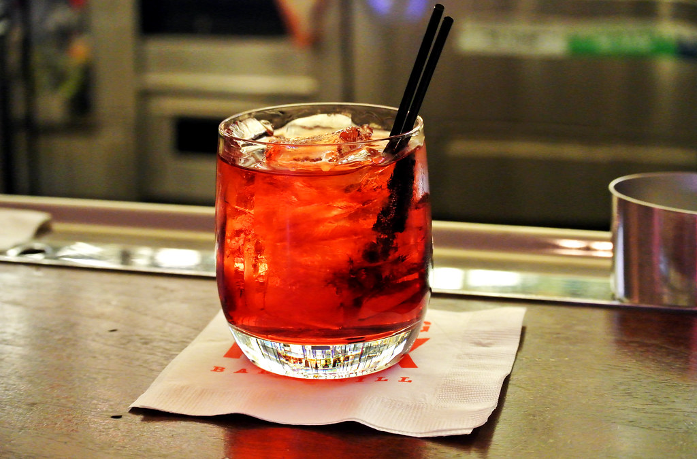

Cócteles
Receta Destacada
Piña Colada: El Refrescante Cóctel Caribeño Perfecto para el Verano
Embárcate en un viaje sensorial con nuestra receta de Piña Colada, un deleite tropical que evoca los cálidos vientos del Caribe en cada sorbo. Este cóctel, oriundo de Puerto Rico y amado en todo el mundo, ofrece una mezcla equilibrada de sabores que se fusionan en armonía: la dulzura exótica de la piña, la cremosidad de la leche de coco y la suavidad del ron blanco.
 Seguir Leyendo
Seguir Leyendo
Negroni: El Elegante y Atemporal Cóctel Italiano que Deleitará tu Paladar
Sumérgete en la sofisticación de la coctelería italiana con nuestra receta del clásico Negroni. Este cóctel, amado por su equilibrio entre amargor, dulzura y complejidad, es una combinación perfecta de ginebra seca, Campari y vermut rojo, que se fusionan para ofrecer una experiencia de sabor inigualable.
 Seguir LeyendoLa Margarita: La Elegancia Cítrica que Revoluciona tus Sentidos
Sumérgete en la historia de la icónica Margarita, un coctel que fusiona el encanto del tequila, el toque cítrico del triple seco y el frescor del jugo de lima. Esta bebida, que evoca la belleza de una mujer, se cuenta entre las joyas de la mixología y tiene raíces que se entrelazan con románticas leyendas.
 Seguir Leyendo
Seguir Leyendo
Caipirinha: El Refrescante Elixir Brasileño que Conquista Paladares
Adéntrate en el fascinante mundo de la Caipirinha, la bebida que destila la esencia de Brasil en cada sorbo. Desde los remotos rincones de este país tropical emerge esta fusión única de cachaça, lima y azúcar, una auténtica obra maestra que despierta los sentidos.
 Seguir Leyendo
Seguir Leyendo
Descubre el Elegante Mundo del Cosmopolitan: Elixir de Sofisticación y Sabor
Adéntrate en la magia del Cosmopolitan, un cóctel que encarna la elegancia y el refinamiento en cada sorbo. Esta icónica bebida ha trascendido las barreras del tiempo para convertirse en el símbolo de la sofisticación moderna.
 Seguir Leyendo
Seguir Leyendo